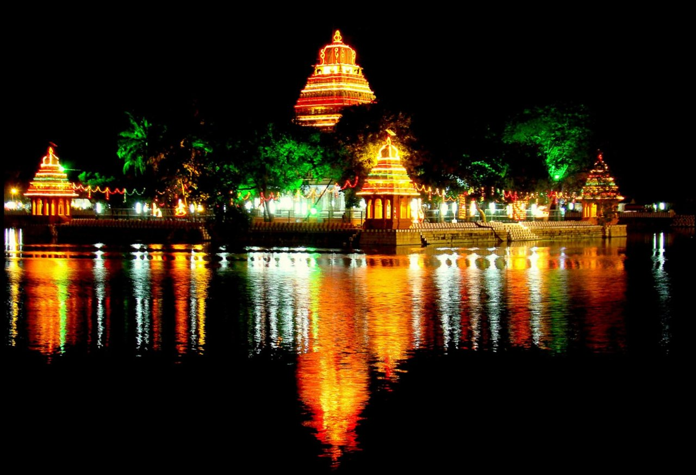
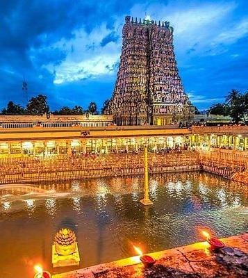
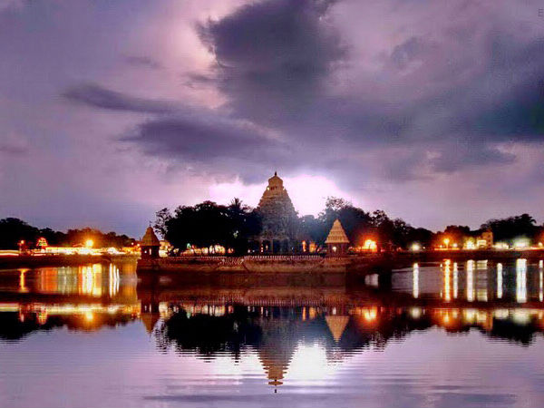
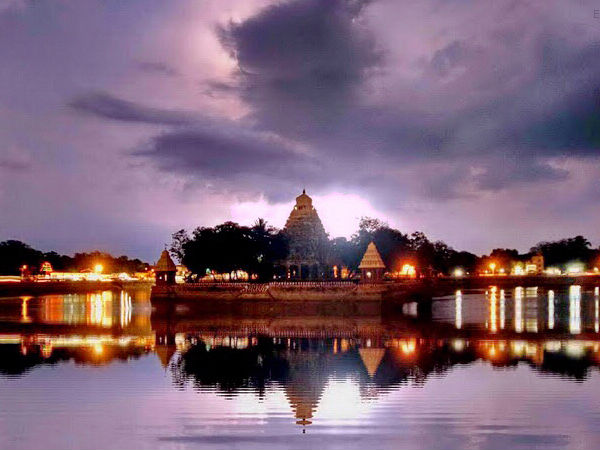
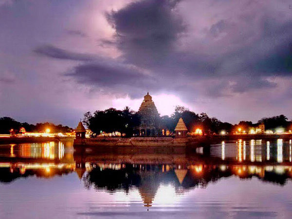

An ancient city that takes you back in time; where you will stand wondering about the evolution of culture, traditions and civilization. Walk further and you will be amazed by how such a historic city has a bustling urban face too.
‘Thoonga Nagaram’ is what Madurai is popularly called in Tamil Nadu. It means ‘the city that never sleeps’. That’s true in many ways. History stays awake in this destination and the sprawling urban centre that Madurai is, offers you all the conveniences you will love for a comfortable stay. The earliest references of Madurai can be traced back to the 3rd century BC.
Referred to as the ‘Athens of the East’ due to the lofty towers of Meenakshi Sundareswarar Temple just like the Greek Pantheon, the city finds reference in many literary works of Arabs, Romans and Greek travellers like Megasthenes. Madurai also finds a place in ‘Silapathigaram’, a Sangam literature work. Befittingly, Madurai was a place of scholarly importance. Ports, prodigies, scholars and critics were a part of kingly courts that ruled Madurai over the centuries. Sangam, the confluence of Tamil scholars and critics, used to regularly convene in the city up to three times a day.



Temples, churches and palaces adorn the streets of Madurai. There is plenty to see and know about. The ancient structures are simply marvellous and speak volumes about the Dravidian architectural brilliance. Besides these, Madurai has stayed relevant as a destination through history; a factor that has seen many establishments come up in the city over the years. The place is very tourism friendly and attracts millions of visitors every year.
Places to be Visit
Gandhi Memorial Museum
A must visit place in Madurai, Gandhi Memorial museum is housed in the splendid old palace of Rani Mangammal. The museum is a window to the glorious episodes of freedom struggles, glimpses from the Gandhian movement and a rich collection of relics.
Browse through a vast collection of books in the library of the museum and the old letters written by Gandhi and reels of microfilms can also be found here. An open air theater at the south side of the main building acts as a venue for various cultural programmes. Plan your trip to take part in the various festivals being hosted here. A five day long programme is held annually as part of Gandhi jayanti. At the museum, there is a section devoted to specific facets of Gandhi's life.
The palace which now houses the museum was built during the Naick reign in 1670 AD. A replica of a hut in Sevagram sits in front of the main building of the museum.
Madurai has an inexorable link with Gandhi. It was here that Meenakshi temple was opened to the entry of Harijans, marking a historic chapter in the fight against untouchability.
Samanar Hills
History, culture, and nature come together at Samanar hills, a rocky stretch of hillocks, known for its many Jain and Hindu monuments dotted across its landscape. Locally known as Thiruvuruvagam, Samanar malai or Melmalai, the Samanar hills is located near Keelakuyilkudi village in the Madurai district.
The Samanar hills in Madurai have been declared as a historically rich site and protected monument by the Archaeological Survey of India. The hills are so called because it is common in Tamil Nadu to refer to ascetic sites, particularly of Jain tradition as Samanar.
The monuments found in the hills date between the 2nd century BCE and 12th century CE. Sculptures of Gomateshwara, Mahavira, Yakshi and Yaksha have been found here. The main attractions here are the Settipodavu site and Pechipallam site. The Settipodavu site displays an image of Lord Mahavira, the last Tirthankara of Jainism. The flat stones or stone beds that the Jain monks used to take rest on can also be found here.
 
